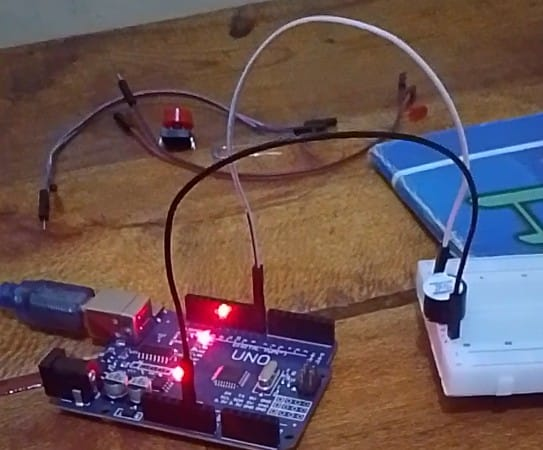

Project Overview
This project uses an active buzzer connected to the Arduino to generate sound alerts for warning and notification systems.
Components Used
- Arduino Uno
- Active Buzzer
- Resistor (if required)
- Breadboard
- Jumper Wires
How It Works
The Arduino sends HIGH signals to activate the buzzer and LOW signals to stop the sound, allowing programmed alert patterns.
⬅ Back to Home